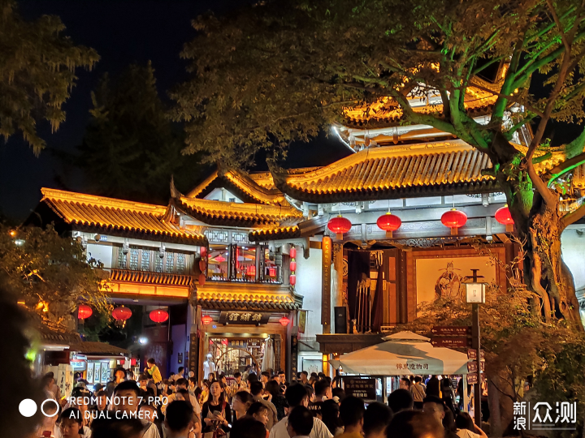

熊猫故乡 · 萌动成都
走进大熊猫基地，和国宝来一场软萌的相遇

锦里古街 · 市井烟火
红灯笼与飞檐翘角，漫步千年蜀都风情

舌尖成都 · 麻辣鲜香
一口火锅，一杯盖碗茶，尽享巴适生活
🎬 一起看成都
成都，别称“蓉城”“天府之国”，是四川省省会，也是国宝大熊猫的故乡。这里有悠久的三国文化与古蜀文明，有宽窄巷子、锦里的市井烟火，更有麻辣鲜香的火锅与串串。慢节奏的茶馆时光，让这座城市温柔又巴适，欢迎来成都，和小熊猫一起慢慢玩！
走进大熊猫基地，和国宝来一场软萌的相遇

红灯笼与飞檐翘角，漫步千年蜀都风情
一口火锅，一杯盖碗茶，尽享巴适生活
成都，别称“蓉城”“天府之国”，是四川省省会，也是国宝大熊猫的故乡。这里有悠久的三国文化与古蜀文明，有宽窄巷子、锦里的市井烟火，更有麻辣鲜香的火锅与串串。慢节奏的茶馆时光，让这座城市温柔又巴适，欢迎来成都，和小熊猫一起慢慢玩！